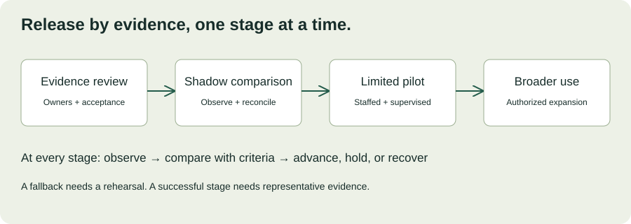

MODULE 03 · SYSTEM DESIGN & DELIVERY
Northstar’s adapter now survives duplicate events and cursor recovery. The sponsor asks, “Can all dispatchers use it on Monday?” Your tests establish that the integration works under tested conditions. They do not yet establish that the service can be deployed, observed, supported, and recovered in the customer’s environment.
This chapter connects engineering delivery to an explicit launch decision. Northstar, the release scenarios, and numerical thresholds are fictional training examples. The local readiness exercise offers learning feedback; it neither deploys software nor grants production approval.
Learning objectives and deliverables
- Separate functional acceptance from operational readiness.
- Define staged rollout, hold, and recovery criteria.
- Prepare observability and a usable support handoff.
- Reason about migrations, rollback limits, and recovery evidence.
- Produce a launch packet with owners, evidence, and an authorized decision.
Allow 100–130 minutes including the workshop. Prerequisites: Chapters 10, 12, and 13. Deliverables: a readiness assessment, staged release plan, incident response note, and support handoff.
14.1 Working software is one part of readiness
Functional acceptance asks whether the application performs the agreed workflow. Operational readiness asks whether the organization can run that workflow under realistic conditions and respond when it fails. Commercial approval, security approval, user acceptance, and operational acceptance may have different owners. Identify them rather than treating one sponsor’s enthusiasm as every approval.
| Readiness area | Evidence | Owner to confirm |
|---|---|---|
| Customer workflow | Representative dispatcher acceptance cases and known limitations. | Operations lead |
| Access and data handling | Negative authorization tests, retention decisions, approved identities. | Customer security and data owners |
| Deployment | Versioned artifact and configuration, repeatable deployment rehearsal. | Release owner |
| Recovery | Restore or rollback rehearsal with measured results. | Service owner |
| Support | Confirmed coverage, alert routing, runbook, and escalation exercise. | Operations and support owners |
Use a risk-based checklist tailored to the actual deployment. A checked box without evidence can conceal uncertainty. Google’s launch guidance provides a useful example of structured review; your customer’s smaller deployment needs its own scope and ownership. Reliable Product Launches at Scale ↗
14.2 Define the release unit
A release includes more than application code. Record the artifact version, schema version, configuration revision, feature-flag state, dependency assumptions, and relevant access changes. Keep secrets outside source-controlled configuration. Record secret references and rotation procedures without copying secret values into a launch document.
Promote a known artifact through environments instead of rebuilding an untracked variant for production. Differences between staging and production—network rules, identity scopes, representative data, quotas, and scale—must be visible. A green staging test cannot establish a production permission that was never exercised.
Illustrative release manifest
Release: northstar-review-0.4.0
Artifact: immutable build reference
Configuration: depot-pilot-v3
Schema: review-v2 (backward-compatible addition)
Audience: approved pilot users at Depot A
TMS write-back: disabled / outside current scope
Release owner: confirmed named owner
Fallback: existing dispatcher workflow
Evidence: acceptance, access, replay, and restore reports
Decision: pending authorized launch reviewReplace placeholders with real references before using this as an operational record. A manifest makes the release identifiable; it does not prove the listed evidence passes.
14.3 Release in observable stages
Choose stages that limit consequences while producing useful evidence. Northstar might begin with a read-only comparison against the existing workflow, then a small approved dispatcher group during staffed hours, then the second depot. Each step needs an owner, observation period, representative activity, and criteria to continue or stop.

A canary evaluates a change on a limited portion of traffic or users before expansion. Compare relevant behavior with a control or baseline, while checking whether the samples are comparable. A quiet depot during an off-peak hour is weak evidence for morning peak behavior. Canarying Releases ↗
For a low-volume pilot, combine telemetry with representative supervised workflows and operator review. Zero observed failures in five requests does not establish a strong reliability claim. Define what counts as enough evidence before seeing the result.
14.4 Make hold conditions specific
Write conditions that trigger a pause before the release starts. Examples include an unauthorized record becoming visible, missing accepted review decisions, sustained source lag beyond the agreed limit, or an unavailable responder during the launch window. Separate a safety-critical condition from a minor usability defect with a documented workaround.
Do not average away a critical failure with a readiness percentage. A service with excellent documentation and a broken authorization boundary is not “mostly ready.” Missing evidence also matters: an untested restore is an unknown, not a passing result.
Interactive launch-readiness review
For each gate, choose what the launch packet actually demonstrates. “Evidence verified” means the named owner reviewed a relevant result. This exercise produces a review recommendation, never production authorization.
Try this: verify five gates but leave authorization as a known gap. Then mark every gate verified. Explain why even the second result still requires a decision by authorized owners.
14.5 Observe the customer journey
Monitor whether dispatchers can load relevant evidence, whether that evidence is fresh, and whether accepted reviews remain durably recorded. Infrastructure metrics help diagnose problems but do not replace workflow measurements. A healthy CPU chart can coexist with stale shipment data.
Attach release identifiers and correlation IDs to operational events so responders can compare behavior before and after a change. Avoid logging credentials and unnecessary payloads. Give responders access to the dashboards and logs they need before the launch window.
An actionable alert identifies the symptom, affected service, urgency, owner, and first diagnostic step. Test delivery to the actual responder path. An alert dashboard nobody watches is not support coverage. Google’s SLO alerting guidance discusses balancing detection with noisy alerts, including the special problem of low traffic. Alerting on SLOs ↗
For Northstar, distinguish ingestion lag from review-request latency. An interface can respond quickly while serving yesterday’s data. Track both and tell users when evidence is stale. Do not redefine failures out of the metric to make a release appear healthier.
14.6 Rollback is not time travel
Restoring an earlier application version does not necessarily undo database changes, external writes, or user decisions. Before launch, identify irreversible effects and the data that an older version cannot understand. Test the fallback with the actual schema and configuration combination.
For an additive migration, an expand-and-contract approach can preserve compatibility: add the new representation, deploy code that tolerates both, migrate and verify data, switch readers, and remove the old representation only after the rollback window and dependency review. The exact sequence depends on data semantics and application behavior; avoid treating it as an automatic guarantee.
| Change | Recovery question |
|---|---|
| New application build | Can the previous build operate with current data and configuration? |
| Schema migration | Would rollback lose newly written information or break readers? |
| Source checkpoint change | Can replay duplicate effects or skip records? |
| Customer-facing notification | What correction is possible after the recipient has already seen it? |
| Credential rotation | Is the previous credential still valid, and should it be? |
Define recovery time and acceptable data loss, then rehearse restoration and measure both. A backup file is an input to recovery, not evidence of a successful restore. Preserve an audit trail of repair work and reconcile the resulting state.
14.7 Practice the first incident
At 09:15, the first pilot users report stale exception statuses. Review requests remain fast, but ingestion lag is increasing after a source quota change. The sponsor asks whether you can “just add more workers.” Chapter 12’s capacity analysis gives you a reason to investigate the dependency budget before changing concurrency.
Choose the first response
Assign one person to coordinate the incident, one to investigate or mitigate, and one to update stakeholders where staffing allows. State known impact, current action, and the next update time. Separate confirmed facts from hypotheses. Preserve evidence before destructive repairs.
“The pilot is showing delayed shipment updates. We have paused expansion and directed affected dispatchers to the agreed source workflow. The integration owner is investigating quota changes; we will provide the next update at 09:45, even if the cause is still being confirmed.”
This is a fictional communication example, not a message to send. After recovery, verify the workflow and backlog state before announcing resolution. Record causes, contributing conditions, and specific follow-up actions without reducing the review to individual blame.
14.8 Handoff means someone else can operate it
A document delivered is not a handoff completed. Ask the receiving team to use the runbook in a rehearsal: locate the deployed version, find a failed event, identify the affected depot, pause the relevant processing path, and follow the approved escalation route. Observe where they need undocumented knowledge.
Minimum useful runbook
- Service purpose, permitted scope, and authoritative data source.
- Owners, support hours, escalation contacts, and severity definitions.
- Dashboards, log locations, and least-privilege access requirements.
- Common symptoms, diagnostic checks, and bounded mitigation steps.
- Release, pause, recovery, and reconciliation procedures.
- Known limitations, outstanding risks, and links to decision records.
- How and when to update the runbook after a change.
Agree on the boundary between customer operations, the FDE team, platform engineering, and the source vendor. Do not promise overnight support that nobody has accepted. If the service is supported only during staffed hours, its release and customer expectations must reflect that constraint.
14.9 Launch decision workshop
Scenario: Northstar requests Monday launch at both depots. Functional tests pass. The restore rehearsal has not happened, one export path lacks a cross-depot access test, and support coverage is confirmed only for Depot A’s daytime shift. The sponsor says the deadline cannot move.
In 25–35 minutes, prepare a launch packet. Propose a bounded next step that addresses the customer’s objective without implying missing evidence exists. Include blockers, owners, required tests, fallback, staged audience, observation plan, and an explicit decision request.
Worked response outline
Do not approve the two-depot release on the given evidence. Complete the export authorization test and recovery rehearsal before a production recommendation. Confirm whether a limited Depot A daytime pilot meets the sponsor’s objective and is operationally supportable. Record remaining scope as deferred, not implicitly approved. Identify who accepts residual risks and who can stop the rollout. If necessary, offer a supervised demonstration using approved non-production data while readiness gaps are resolved; do not label it a production launch.
| Rubric | Points |
|---|---|
| Customer outcome and explicit scope | 20 |
| Evidence, blockers, and ownership | 25 |
| Staged rollout and hold criteria | 20 |
| Recovery and support readiness | 25 |
| Clear authorized decision request | 10 |
14.10 Verified reading and application
Primary-source pages checked October 25, 2026. Adapt the principles to the customer’s environment; these readings do not replace its launch approval process.
- Reliable Product Launches at Scale — identify five launch questions specific to Northstar.
- Canarying Releases — define a limited audience, comparison, and advancement criteria.
- Alerting on SLOs — explain which customer symptom should notify a responder and why.
14.11 Knowledge check
14.12 Completion check
You can now distinguish “the code works” from “the service is ready for this audience.” A defensible launch names the evidence, limits the initial exposure, makes failures visible, and provides a practiced recovery path with an accountable owner.
Field notes
Which operational assumption in your next release needs a rehearsal?